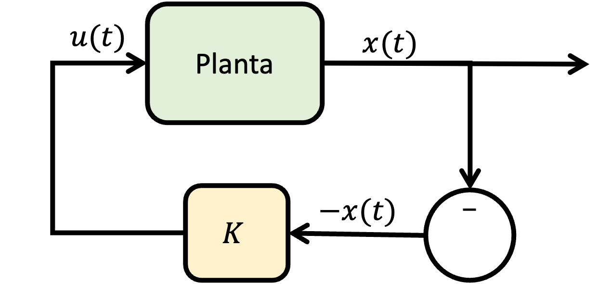
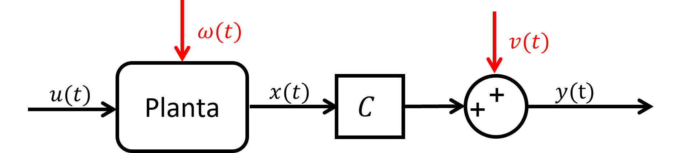
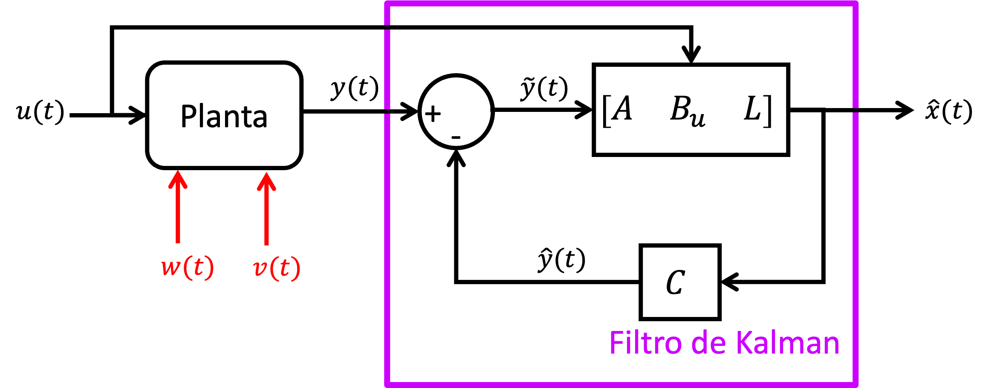
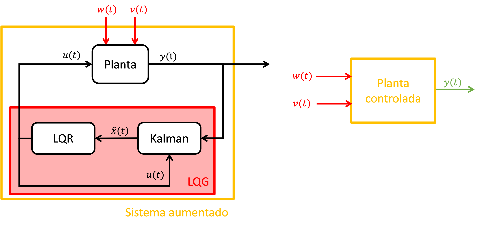

Dado un sistema dinámico LTI:
\begin{align*} \dot {x}(t) = A x(t) + B u(t) \end{align*}
Asumiendo que el sistema LTI es:
El problema es encontrar \(u(t)\), para llevar el estado \(x(t)\) hasta \(x(t_1)\), para un tiempo finito \(t\in [t_0,t_1]\), tal que se cumpla la siguiente condición, donde \(J(u)\) es el funcional de desempeño:
\begin{align*} J(u) = \int _{t_0}^{t_1} l \big ( x(t), u(t), t \big ) dt + m \big ( x(t_1) \big ) \end{align*}
El problema de control óptimo se define como:
\begin{align*} u^\star = \arg \min _u J(u) \end{align*}
Dado el sistema dinámico LTI de tiempo contínuo:
\begin{align*} \dot {x} = A x(t) + B u(t), \qquad x(0) = x_0 \end{align*}
Ahora el problema es encontrar \(u(t)\), para llevar los estados \(x(t)\) hasta \(0\) en un horizonte de tiempo infinito \(t \in [0,\infty )\), tal que el funcional de desempeño:
\begin{align*} J(u)=\int _{0}^{\infty } \left (x^T Q x+u^T R u \right ) dt \end{align*}
se mininice:
\begin{align*} u^\star = \arg \min _u J(u) \end{align*}
donde \(Q\) y \(R\) son matrices definidas positivas y simétricas. Notar que en este caso de LQR de horizonte infinito se
asume que el costo terminal es cero.
Cabe mencionar que matrices \(Q\) y \(R\) penalizan los estados y control, respectivamente, en el cálculo del funcional de desempeño. Esto quiere decir que valores grandes de \(Q\) priorizan más la minimización de los estados, mientras que valores grandes de \(R\) priorizan señales de control con menor esfuerzo (por ejemplo, menor consumo energético).
Supongamos que la matriz \(P\) es cuadrada, simétrica (\(P = P^T\)) y definida positiva (\(P \succ 0\)), y que se agrega el término \(x_0^T P x_0\) explícitamente al funcional de desempeño sin cambiar su estructura original:
\begin{align*} J(u) &= \underbrace {\left ( x_0^T P x_0 - x_0^T P x_0 \right )}_{=0} + \int _{0}^{\infty } \left (x^T Q x+u^T R u \right ) dt \\ & = x_0^T P x_0 - x_0^T P x_0 + \int _{0}^{\infty } \left (x^T Q x+u^T R u \right ) dt \end{align*}
Ahora, utilizando el teorema fundamental del cálculo, la siguiente igualdad se cumple:
Reemplazando en el funcional de desempeño:
\begin{align} J(u) &= x_0^T P x_0 + \int _{0}^{\infty } \left [\frac {d}{dt}\left ( x^T P x\right ) + x ^T Q x+u^T R u \right ] dt \end{align}
Desarrollando el primer término dentro de la integral utilizando la regla de la cadena:
\begin{align} \frac {d}{dt}\left ( x^T P x\right ) = \dot {x}^T P x + x^T P \dot {x} \end{align}
Reemplazando la ecuación de estados:
\begin{align} \frac {d}{dt}\left ( x^T P x\right ) &= \left (A x + B u\right )^T P x + x^T P \left (A x + B u\right )\\ &= x^T A^T P x + u^T B^T P x + x^T P A x + x^T P B u \\ &= x^T \left ( A^T P + PA\right ) x + 2 u^T B^T P x \\ \end{align}
Reemplazando en el funcional de desempeño:
\begin{align} J(u) &= x_0^T P x_0 + \int _{0}^{\infty } \left [ x^T \left ( A^T P + PA + Q\right ) x + u^T R u + 2 u^T B^T P x \right ] dt \end{align}
Utilizando la técnica de “completar los cuadrados”:
Igualando \(K = R^{-1} B^T P\):
\begin{align} u^T R u + 2 u^T B^T P x = \left ( u + R^{-1} B^T P x\right )^T R \left ( u + R^{-1} B^T P x\right ) - x^T \left (P^T B R^{-1} B^T P \right ) x \end{align}
Nuevamente reemplazamos en el funcional de desempeño:
\begin{align} J(u) &= x_0^T P x_0 + \int _{0}^{\infty } \left [ x^T \left ( A^T P + PA + Q - P^T B R^{-1} B^T P\right ) x + \left ( u + R^{-1} B^T P x\right )^T R \left ( u + R^{-1} B^T P x\right ) \right ] dt \end{align}
Notas:
Finalmente derivamos las ecuaciones que deben cumplirse para el control óptimo LQR de horizonte infinito:
\begin{align} J(u^\star (t)) = x_0^T P x_0 \\ u^\star (t) = - K x(t) \\ A^T P + PA + Q - P^T B R^{-1} B^T P = 0 \label {eq:ARE} \end{align}
Entonces, la ganancia del controlador LQR horizonte infinito, \(K = R^{-1} B^T P\), se calcula resolviendo primero la ecuación
algebraica de Ricatti (??) para obtener el valor de \(P\).
En Matlab, se utiliza la función lqr().

P: ¿Cómo elijo los valores de \(Q\) y \(R\)?
R: Recordar que
\begin{align*} J(u) = \int _0^\infty \Big ( x^T Qx+u^T Ru\Big ) dt \end{align*}
Recordar que en sistemas estructurales:
\begin{align*} x = \left [ \begin{array}{c} \dot {z} \\ \dot {z} \end{array}\right ] \end{align*}
Podemos escribir la forma cuadrática \(x^T Q x\) de manera tal que le asignamos un significado físico:
\begin{align*} \frac {1}{2}x^T Qx=\frac {1}{2}\left [ \begin{array}{cc} \dot {z} & \dot {z} \end{array}\right ] \left [ \begin{array}{cc} K_s & 0 \\ 0 & M_s \end{array}\right ] \left [ \begin{array}{c} \dot {z} \\ \dot {z} \end{array}\right ] = \frac {1}{2}z^T K_s z+\frac {1}{2}\dot {z}^T M\dot {z} \end{align*}
Por otra parte: \(u^T Ru\): energía consumida por el controlador.
Comentario: No importan los valores absolutos de \(Q\) y \(R\) en el resultado del control óptimo. Lo que s;i importan son los valores relativos de \(Q\) respecto a \(R\) (o viceversa).
\begin{align*} J(u)=\int _0^\infty (x^T Q x + u^T R u)dt \end{align*}
Elegir \(Q\) y \(R\) matrices diagonales. Cada componente de \(q_{ii}\) y \(r_{ii}\) están dados por:
\begin{align*} q_{ii} &= \frac {1}{\text {máx valor aceptable de }x_i^2}\\ r_{ii} &= \frac {1}{\text {máx valor aceptable de }u_i^2} \end{align*}
Sea el sistema LTI de tiempo contínuo:
\begin{align*} \dot {x} &= Ax+B_u u +B_w w(t)\\ y &= Cx+v(t) \end{align*}
donde \(w(t)\) es la perturbación sobre el sistema y \(v(t)\) es el ruido de la medición.

Objetivo: Estimar los estados \(x\) utilizando un observador óptimo \(\Longrightarrow \) Filtro de Kalman.
Condición:
Asumir que \(w(t)\) y \(v(t)\) son p.e. Gaussianos, w.s.s., y de media cero:
Perturbación, \(w(t)\):
Ruido, \(v(t)\):
Asumir en el caso particular que:
\[\mathbb {E}\{w(t)v^T (s)\}=0 \Longrightarrow \text {$w(t)$ y $v(t)$ están descorrelacionados.}\]
Problema de optimización:
\begin{align*} \text {Minimizar } \tilde {y} &= y-\hat {y}\\ \Leftrightarrow \text {Minimizar } \tilde {x} &= x - \hat {x} \end{align*}
Definición: Matriz de autocovarianza del error de estado \(\tilde {x}\) (en estado estacionario)
\begin{align*} \Gamma =\mathbb {E}\{\tilde {x}\tilde {x}^T \} \text {: matriz cuadrada, simétrica, definida positiva} \end{align*}
Problema: \(\min J\), \(J=\text {trace}(\Gamma ^T \Gamma )\)
\[J=\mathbb {E} \Bigl \{[x_i-\hat {x}_i][x_i-\hat {x}_i]\Bigr \} \]
Los pasos a seguir son análogos al problema de control óptimo LQR de horizonte infinito.
\begin{align} A \Gamma + \Gamma A^T + B_w Q_w B_w^T - \Gamma C^T R_v^{-1} C \Gamma = 0 \end{align}
En términos prácticos, este problema se resuelve en Matlab mediante el comando kalman()
\[(L_{KAL},\Gamma )=\text {Kalman}(A,C,Q_\omega ,R_v) \]
Finalmente:
\begin{align*} \dot {\hat {x}} &= A \hat {x} + B_u u + L \tilde {y} \\ \hat {y} &= C\hat {x} \end{align*}

LQG = Linear Quadratic Gaussian
Suponga el sistema LTI:
\begin{align*} \dot {x} &= Ax + B_u u +B_w w\\ y &= C x + v \end{align*}
Objetivo: diseñar un controlador óptimo con información de la respuesta.
\begin{align*} \text {Control óptimo (LQR)} + \text {Obervador óptimo (Kalman)} \overset {\text {Principio de superposición}}{=} LQG \end{align*}

Parámetros LQG: \(Q\), \(R\), \(Q_w\), \(R_v\).